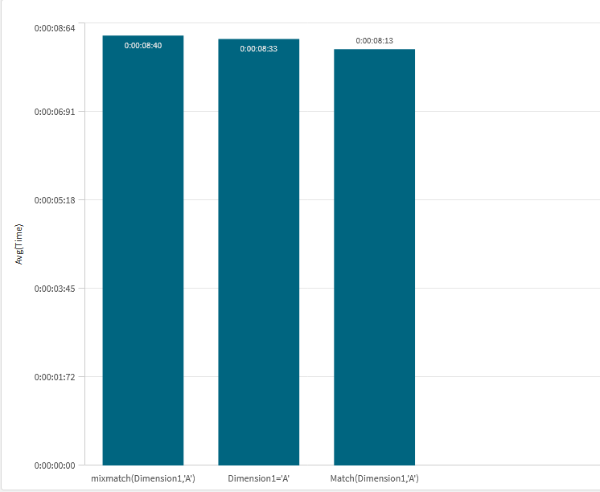

Everyone writes WHERE Dimension1 = 'A'. It's the shortest thing that works, it
reads like SQL, and it's what your fingers type without asking your brain. But Qlik gives you
Match() and MixMatch() for the same job, and they scale to more
values without touching the structure of the clause.
So is = the fast path you're rewarded for using, or just a habit? I ran all three
against a 10 million row resident load, 15 timed runs each —
45 iterations in total. The answer surprised me: Match() came out
fastest, and = was in the middle.
The three ways to filter one value
All three of these keep the same rows — the uppercase 'A' out of a
single-character dimension:
WHERE Dimension1 = 'A' // the operator
WHERE Match(Dimension1,'A') // case-sensitive
WHERE MixMatch(Dimension1,'A') // case-insensitiveThey are not quite semantically identical, and that matters more than the timings do — I'll come back to it. First, the numbers.
Test setup
Rather than write three near-identical blocks, the expressions live in an inline
TestPlan table and the script loops over them, dollar-expanding each one straight
into the WHERE clause. Every run is timed with the same sLog
subroutine, and each expression is repeated vRepeats times so the reported figure
is an average rather than one lucky pass.
TestPlan:
LOAD * INLINE [
Grp|TestName|Expression
1-LowCard|d1_mixmatch|MixMatch(Dimension1,'A')
1-LowCard|d1_equals|Dimension1='A'
1-LowCard|d1_match|Match(Dimension1,'A')
] (delimiter is '|');
LET vTestCount = NoOfRows('TestPlan');
TRACE >>> running $(vTestCount) tests, $(vRepeats) timed runs each, over $(vRecordCount) rows;
FOR t = 0 TO $(vTestCount) - 1
LET vGrp = Peek('Grp', $(t),'TestPlan');
LET vName = Peek('TestName', $(t),'TestPlan');
LET vExpr = Peek('Expression',$(t),'TestPlan');
TRACE >>> $(vName): $(vExpr);
FOR r = 1 TO $(vRepeats)
LET vTestStart = timestamp(now(),'hh:mm:ss.fff');
Tmp_Run:
NOCONCATENATE
LOAD * RESIDENT Transactions
WHERE $(vExpr);
LET vHits = NoOfRows('Tmp_Run');
DROP TABLE Tmp_Run;
CALL sLog('$(vExpr)','$(vTestStart)',timestamp(now(),'hh:mm:ss.fff'));
NEXT r
NEXT tAll three returned 384,630 rows out of 10 million — about 1/26th, exactly what you'd expect from a random single letter. Same output, three ways of asking for it.
INLINE block — no copy-pasting a load block and
forgetting to rename the log label. The Grp column lets you tag families of tests
(low vs high cardinality, say) and split them in the chart afterwards.
Results

| Expression | Avg time | vs fastest |
|---|---|---|
| Match(Dimension1,'A') | 8.13 s | — |
| Dimension1='A' | 8.33 s | +2.5% |
| MixMatch(Dimension1,'A') | 8.40 s | +3.3% |
Three bars you can barely tell apart. The whole spread is 0.27 seconds across 10
million rows — about 3%. The interesting result isn't that Match() won;
it's that = didn't.
Read this honestly: it's a tie
I'd love to tell you Match() is 3% faster and you should go rewrite your scripts.
I don't think the data supports that. A 3% gap over 15 runs, on a machine that is also being a
machine, is the sort of margin that moves when someone opens a browser tab.
There's also an ordering effect built into the harness worth naming: the loop runs all 15 repeats of the first expression, then all 15 of the second, and so on. MixMatch was first in the plan and came last in the results; Match was last in the plan and came first. Any warm-up — caches settling, memory allocated and reused across runs — lands disproportionately on whatever went first. Interleaving the repeats instead of grouping them would rule that out, and I'd expect it to shrink the gap further rather than widen it.
WHERE.
So pick on semantics, not speed
Once performance is off the table, the differences that are left are the real ones — and they're about case handling and flexibility.
| = | Match() | MixMatch() | |
|---|---|---|---|
| Case sensitivity | Case-sensitive | Case-sensitive | Case-insensitive |
| Multiple values | Needs OR per value |
Comma-separated list | Comma-separated list |
| Returns | True / False | Which value matched (1-based) | Which value matched (1-based) |
The multiple-values case is where = falls apart. One value looks
tidy. Five values means five comparisons and an OR chain, and every time the list
changes you're editing operators rather than data:
// = : the clause grows with the list
WHERE Dimension1='A' OR Dimension1='B' OR Dimension1='C' OR Dimension1='D';
// Match() : the clause stays the same shape
WHERE Match(Dimension1,'A','B','C','D');
And because Match() returns the position of the value that matched, not
just a boolean, you get an ordering primitive for free. That's genuinely useful outside a
WHERE clause — a priority sort, a status rank, a custom sequence with no mapping
table:
LOAD
Status,
Match(Status,'New','Open','Pending','Closed') AS StatusSort
RESIDENT Tickets;
= can't do that at any price. It answers one question and returns one bit.
Match() is case-sensitive and
MixMatch() is its case-insensitive twin — that's the only difference between
them, and it's why swapping one for the other silently changes your row counts. In this test
it made no difference because Dimension1 only ever holds uppercase letters. On
real data with mixed casing, MixMatch(Status,'closed') catches
Closed, CLOSED and closed, and Match()
catches exactly one of them. Choose that behaviour deliberately rather than inheriting it from
whichever function name you typed.
So — should you ever use "="?
Yes, and I'm not going to pretend otherwise. For a single value in a
WHERE clause, Dimension1='A' is clear, conventional, and costs
nothing measurable. Rewriting working scripts to chase 3% would be busywork.
But when I'm writing something new, Match() is the better default, and this
benchmark is what convinced me there's no performance penalty for using it:
- It doesn't change shape when the list grows. One value or twenty, the clause looks the same.
- The values stay data. A comma-separated list is something you can generate from a variable or a field; an
ORchain is something you have to write. - Case behaviour is explicit in the function name —
MatchorMixMatch— instead of implied by an operator. - It returns a position, which turns the same function into a sort key when you need one.
Bottom line
- All three are the same speed. 8.13 s / 8.33 s / 8.40 s over 10M rows — a 3% spread, inside the noise, with an ordering effect that probably explains most of it.
- The cost is the rows, not the comparison. Reading 10M rows and writing 384,630 dominates; the operator is a rounding error.
- Don't rewrite
=for performance. There's nothing to win. - Do reach for
Match()by default in new code — it scales to more values, keeps them as data, and hands you a sort position. MixMatch()only when you mean case-insensitive, not as a safety blanket.
The pleasant conclusion of a benchmark that shows no difference: you get to choose on readability and flexibility, guilt-free. That's not the result I expected going in, but it's the more useful one.